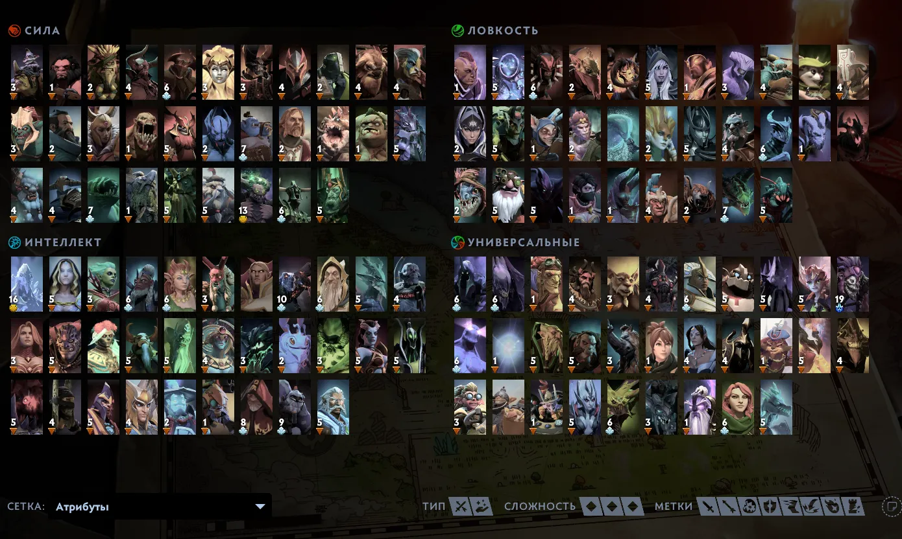

Многообразие героев
В Dota 2 представлено более 120 уникальных героев, каждый со своими способностями, стилем игры и ролью в команде. Все герои делятся на три основных атрибута: Сила, Ловкость и Интеллект.
Правильный выбор героя под ситуацию и состав команды — ключевой элемент успеха в Dota 2.
